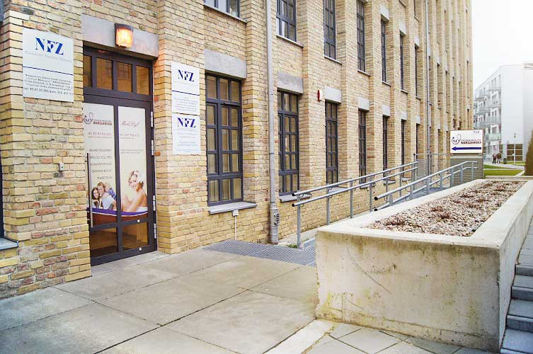
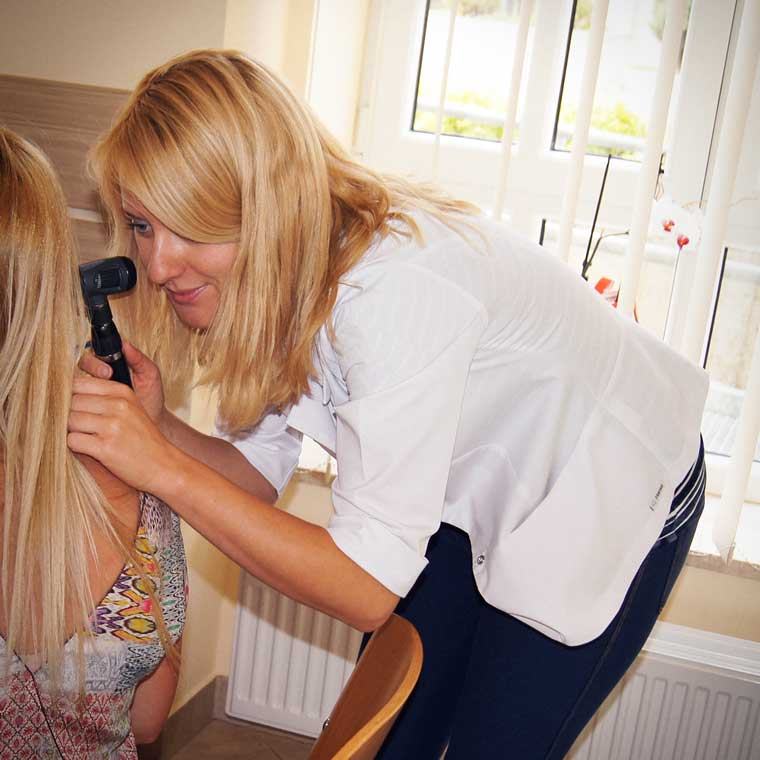
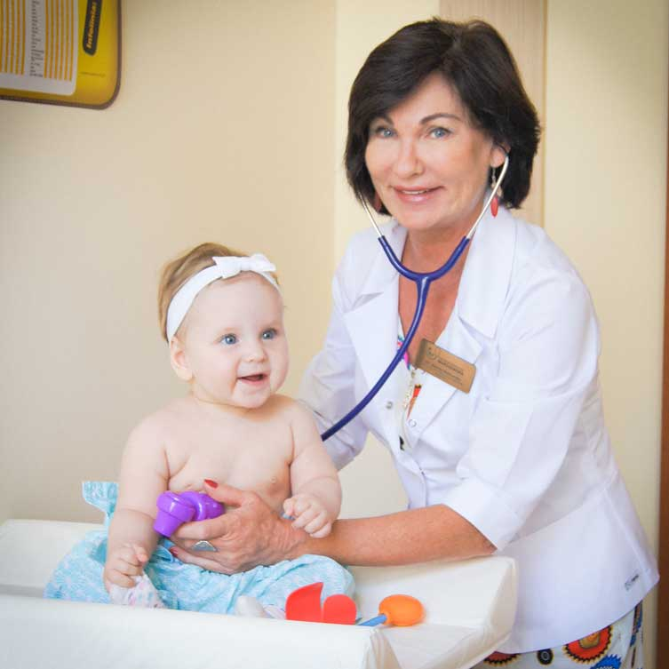

Poradnia Rodzinna _
_: 85 875 53 55
O przychodni
NZOZ Centrum Medyczne „Warszawska" świadczy bezpłatne usługi medyczne w zakresie podstawowej opieki zdrowotnej bezpłatnie na podstawie umowy z NFZ oraz prywatnie.
Usługi w ramach NFZ
- badania i porady lekarskie
- badania diagnostyczne, podstawowa analityka medyczna, badanie EKG
- opieka nad kobietą w ciąży
- opieka nad noworodkiem i niemowlęciem
- opieka nad dzieckiem
- szczepienia ochronne obowiązkowe i zalecane
- kierowanie na leczenie specjalistyczne, szpitalne, uzdrowiskowe
- profilaktyka chorób układu krążenia, cukrzycy i chorób zakaźnych
- lekarskie wizyty domowe w uzasadnionych medycznie przypadkach
Dodatkowe udogodnienia
- Oferujemy parking podziemny dla naszych pacjentów
- Lokal jest przystosowany do potrzeb osób niepełnosprawnych
- W lokalu znajduje się kącik zabaw dla dzieci oraz przewijak
- Pobieranie krwi do badań laboratoryjnych : poniedziałki, środy i piątki w godz. 8.00 - 9.00
Godziny otwarcia
Poradnia jest czynna od poniedziałku do piątku w godzinach 8.00 - 18.00.
Zapisy na wizyty w godz. 8.00- 17.00 telefonicznie, osobiście, za pośrednictwem osób trzecich.
Kontakt
Personel medyczny
- lek. med. Elżbieta Malinowska - specjalista medycyny rodzinnej, pediatra
- lek. med. Patrycja Budna - specjalista medycyny rodzinnej
- lek. med. Wojciech Budny - specjalista chorób wewnętrznych
- piel. Irena Dawidowicz - specjalista pielęgniarstwa pediatrycznego
- mgr piel. Urszula Moniuszko - specjalista pielęgniarstwa anestezjologicznego i intensywnej opieki
- piel. Katarzyna Jasińska
- mgr położna Katarzyna Kitlasz - Baczyńska
- -
- -
W godzinach 18.00 - 8.00 od poniedziałku do piątku, w weekendy oraz w dni wolne ustawowo i świąteczne bezpłatną opiekę nad naszymi pacjentami przejmuje Samodzielny Szpital Miejski im. PCK ul.Sienkiewicza 79 w Białymstoku tel. 85 652 25 05 oraz SPZOZ Wojewódzki Szpital Zespolony ul. Skłodowskiej 26 w Białymstoku tel. 85 748 81 26


Jak zostać naszym pacjentem?
Najpierw trzeba wypełnić formularz deklaracji wyboru lekarza i pielęgniarki.
Pobierz formularz deklaracji
Przy składaniu deklaracji w Poradni należy okazać dowód tożsamości i podać numer PESEL.
Ubezpieczony ma prawo wyboru/zmiany lekarza, pielęgniarki i położnej POZ
trzy razy w roku bezpłatnie.
Kalendarz szczepień
Zapraszamy do zapoznania się z kalandarzem udostępnionym w serwisie mp.pl
Zobacz kalendarz